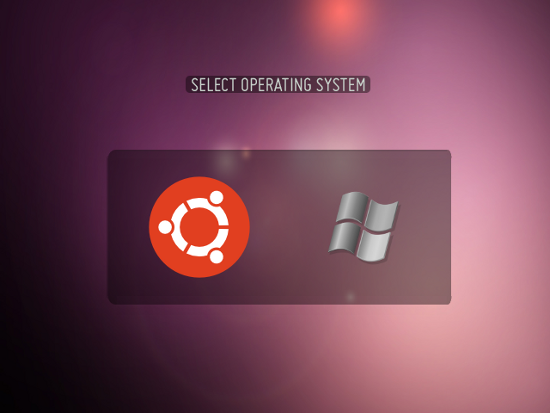

BURG, un GRUB más bonito: instalación en Ubuntu
Dec 4, 2010 · 2 minute read · CommentsComputing

Como sabéis, GRUB (GRand Unified Bootloader) es un fantástico software que nos permite elegir entre los sistemas operativos que tengamos instalados en el momento del arranque. Para muchos es la salvación en una transición de Windows a GNU/Linux mientras que para otros es la forma de acudir suplicando a otro Kernel cuando el principal da problemas. El único problema que puede tener es que es un bastante feo. Al rescate de los vanidosos y acude BURG (Brand-new Universal loadeR from GRUB), nótese la ironía infinita al darle la vuelta a “GRUB”.
BURG sustituye al clásico sistema de arranque ofreciéndonos diversos estilos muy atractivos para personalizarlo. Instalarlo en Ubuntu es muy sencillo, simplemente sigue estos pasos:
Añade estas líneas al fichero /etc/apt/sources.list:
deb http://ppa.launchpad.net/bean123ch/burg/ubuntu maverick main
deb-src http://ppa.launchpad.net/bean123ch/burg/ubuntu maverick main
Sustituye maverick por el nombre de tu distribución. Tras esto, actualiza tus paquetes con:
sudo apt-get update
sudo apt-get install burg
Debes aceptar cuando te avisen sobre la firma desconocida puesto que confiamos en la fuente. Para configurar BURG y hacer que sustituya al clásico GRUB debemos hacer:
sudo burg-install /dev/sda
sudo update-burg
Cambia /dev/sda por el nombre del disco duro donde tengas instalado el gestor de arranque. Para elegir el tema de BURG puedes utilizar el emulador con el que se distribuye:
sudo burg-emu
Existen ciertos atajos de teclado que te vendría bien conocer para configurar BURG a tu gusto:
- t: abre la lista de temas disponibles
- f: cambia entre modo reducido y completo. En el modo reducido no aparecen todos los kernels antiguos.
- c: abre una terminal.
Muchos atajos más que puedes encontrar en la documentación oficial. Bien, llegados a este punto serás mucho más molón y podrás enseñárselo a tus coleguillas. BURG proporciona un sistema para personalizar los temas, puedes encontrar más información al respecto aquí. Disfrútalo.